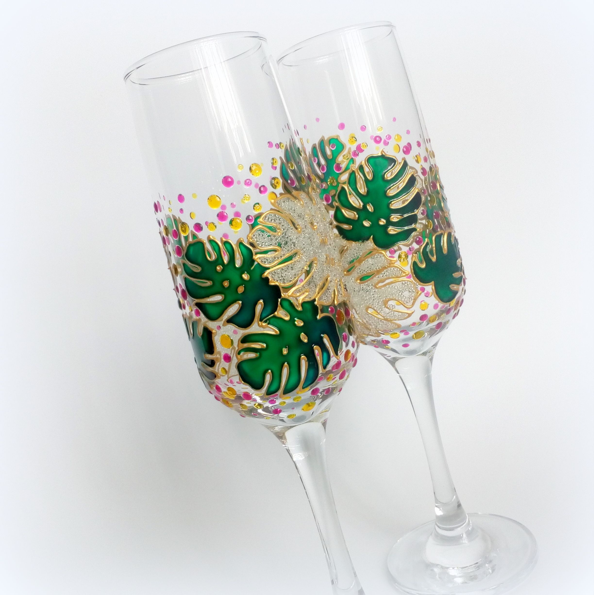
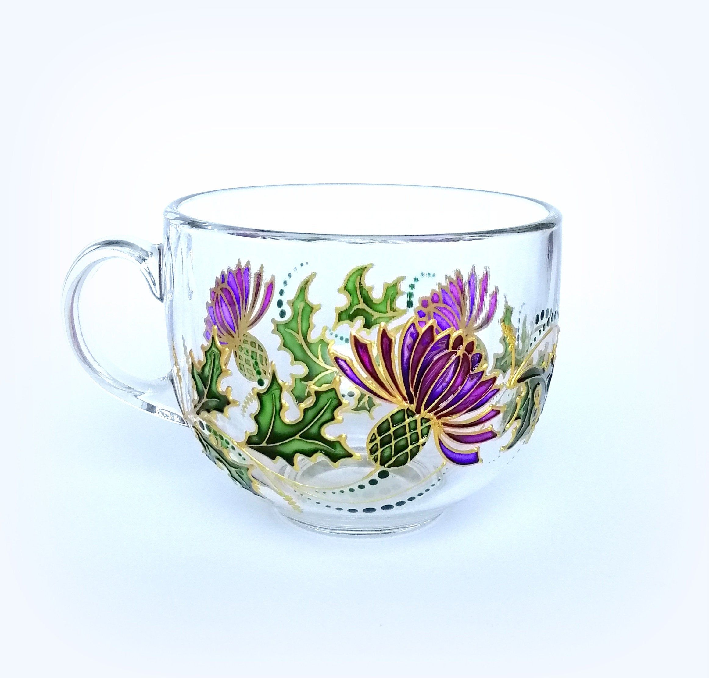
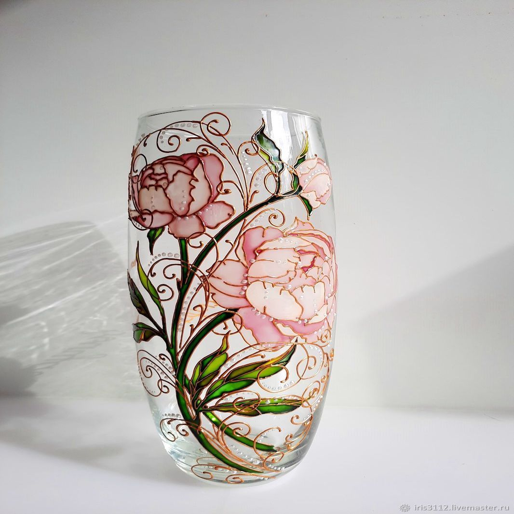

THE ART OF KATERINA OLESHKO
View the full collection
Question?
Collection

Glass

Cup

Vase
#eee;font-size:12px;position:absolute;top:0px;">Цюрих
#eee;font-size:12px;position:absolute;top:14px;">Яндекс.Карты